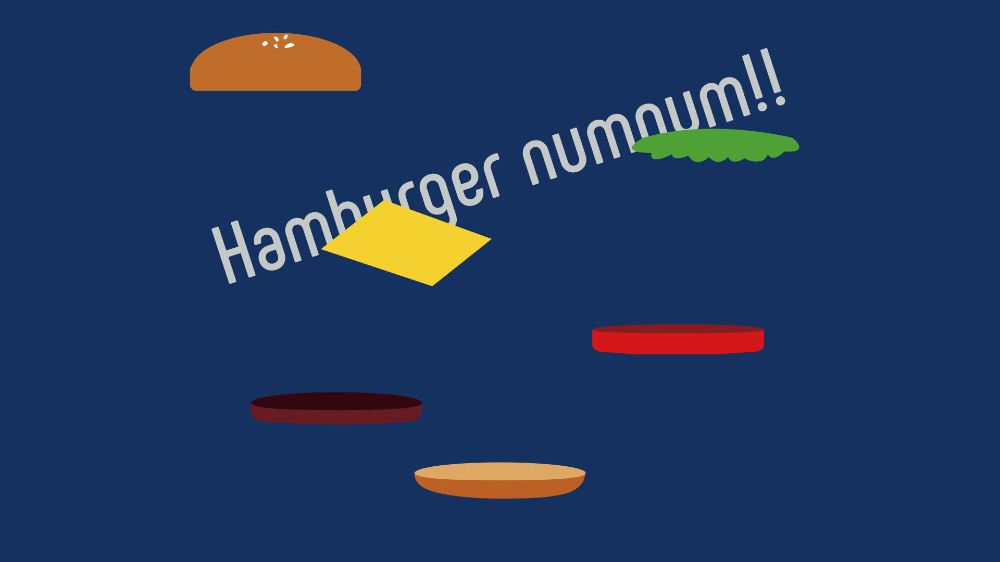

概要
大学の学祭である「芸工祭2019」の個人制作作品として制作しました。
順番に降ってくる具材をタイミングよく落下させて綺麗なハンバーガーを作るという簡単なゲームです。
制作期間
2019年10月(3日間)
使用技術
HTML / CSS / Javascript / Processing / illustrator
コンセプト
学祭のテーマである、もぐもぐを意味する英単語nomnom(ナムナム)をコンセプトにした作品にしました。
作品は学内展示されるので来場者の方が気軽に遊べる簡単なゲームをコンセプトに考え、最終的に画面をタップするだけのシンプルなものにしました。
初めはProcessingを用いて制作しましたが、遊ぶ人が自身のスマホでお手軽に楽しめるようにと思い、Processing.jsを利用してwebに移植しました。
デザイン
ロゴタイトルやハンバーガーのデザインはillustratorを使用して作成しました。
